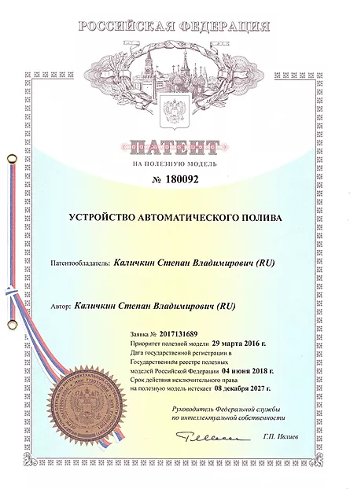

Контроллер автополива INDIGA - это гордость нашей компании!
Это полностью собственная уникальная разработка являющаяся сердцем и мозгом системы.
Контроллер работает, как комплексная система собирающая и обрабатывающая информацию от датчиков и источников данных и управляющая набором различных исполнительных механизмов.
В 2018 году был получен патент на полезную модель “Устройство автоматического полива”
Удобное управление контроллером
- со смартфона
- с компьютера
- с планшета
- с инфракрасного пульта дистанционного управления.
Технические характеристики
- Входное напряжение — ~220 В
- Макс. потребляемая мощность - 200Вт
- Управляющее клапанами напряжение — ~24 В
- Совместим с клапанами RainBird Hunter и др. аналогичными
- Подключение к Ethernet сети — UTP кабель, WiFi интерфейс.
- Реле запуска насоса макс. Ток — 16А
- Инфракрасный порт дистанционного управления
Датчики в комплекте
- датчик температуры
- датчик влажности почвы
- датчик давления
Удобная настройка расписания полива
- Каждая зона полива может индивидуально настраиваться на свое расписание. При этом полив может осуществляться в заданное время с разной периодичностью по дням.
- Возможно включение полива несколько раз в течении дня — прерывистый цикл полива.
- Зона полива может настраиваться на анализ данных о прогнозе погоды, давлении воды в магистрали, влажности почвы.
- Возможно включение автоматического сезонного корректирования продолжительности полива в зависимости от среднесуточной температуры.
- Для каждой зоны задается расчетное потребление воды, это значение учитывается при одновременной работе нескольких зон полива что бы не превысить максимально доступный расход воды для всей системы.
Управление клапанами
- Возможно подключить до 14 клапанов.
- Одновременное включение до 4 клапанов
Работа с сетью
-
Автономный режим работы.
Контроллер может работать без подключения к Ethernet сети в автономном режиме. В этом случае контроллер не получает информацию о прогнозе погоды, нет синхронизации времени. Также не выдаются уведомления и предупреждения на электронную почту службы поддержки. WiFi модуль контроллера переводится в режим точки доступа. Управление контроллером может осуществляться через ИК пульт дистанционного управления, через проводное подключение или через подключение к точке доступа сети WiFi.
-
С подключением к сети.
В режиме с подключением к Ethernet сети и возможностью выхода в Интернет наиболее полно реализуются функциональные возможности контроллера. Это получение и анализ прогноза погоды на ближайшие 3 дня, синхронизация данных с облачным сервисом, обновление программного обеспечения, отсылка уведомлений и предупреждений о возникающих аварийных ситуациях, удаленное управление контроллером через Интернет.
В этом режиме подключение к сети осуществляется с помощью кабеля либо с помощью WiFi модуля контроллера.
Контроллер Indiga обладает рядом отличий и преимуществ перед аналогичными контроллерами ведущих фирм таких как Hunter и RainBird в стандартной их поставке.
Мы утверждаем, что контроллер Indiga превосходит по параметрам все другие контроллеры полива, которые есть на рынке. В чем же его основные отличия. Смотрите сами...
Отличия контроллера INDIGA
Не требуется автоматика для управления насосом
Если необходимо, контроллер берет на себя функции насосной автоматики. Это означает, что автоматику управления насосом ставить не нужно. Управляет насосом контроллер. При этом контроллер определяет и реагирует на большее количество нештатных ситуаций чем это может делать стандартная автоматика управления насосом. Кроме того, обслуживающий персонал получает обратную связь в виде уведомлений о всех нештатных ситуациях.
В комплекте все необходимые датчики!
Контроллер не может использоваться без датчиков - это наше глубокое убеждение.
Это все равно что купить автомобиль без сидений - ездить можно, но радости никакой.
По этой причине все контроллеры идут в комплекте с набором необходимых датчиков. А именно, датчиком давления, датчиком температуры и датчиком влажности. Кроме того контроллер комплектуется реле запуска насоса.
Контроллер полива на 7 или 14 зон
Контроллеры автополива Indiga выпускаются в варианте 7 зон и 14 зон.
Исполнение может быть влагозащищенное или для установки внутри помещений. При этом на лицевой панели контроллера практически нет никаких органов управления и индикации.
Все настройки и управление производится удаленно. Это позволяет производить установку контроллера в местах с ограниченным физическим доступом. Таких, как подвальные или чердачные помещения, кессоны скважин.
Работа 4 зон одновременно
Контроллер автополива Indiga может одновременно запустить полив на четырех зонах. Это позволяет существенно сократить общее время полива. Например, когда хочется полить одну или несколько капельных зон с низким потреблением воды и зону дождеванием с высоким потреблением воды, но график полива у каждой зоны должен быть свой. Ведь нельзя одинаково поливать огурцы, помидоры и газон, а вот начало полива у них может совпадать. Контроллер учитывает потребление воды каждой зоной и поставит полив в очередь, если насосный узел не может обеспечить достаточный для полива объем воды.
Все уведомления и сообщения хранятся в энергонезависимой памяти блока управления
Блок управления поливом позволяет настроить какие уведомления будут отсылаться в службу поддержки. Даже если интернета нет, все уведомления и сообщения не пропадут, они сохраняются в энергонезависимой памяти контроллера.
Поэтому, несмотря на возможные перебои с электричеством или интернетом, всегда можно получить полную историю всех операций и нештатных ситуаций, которые возникали во время работы системы автополива. Это поможет восстановить справедливость в случае возникновения спорных ситуаций.
Широкий набор интерфейсов управления
Контроллер имеет широкий набор интерфейсов управления. Для управления можно подключиться через: Инфракрасный порт (универсальный пульт дистанционного управления), кабельное подключение по витой паре UTP, беспроводное подключение по WiFi.
Возобновление программы полива с того места, где произошло отключение электричества
Если во время цикла полива происходит отключение электроэнергии, то при последующем включении цикл будет продолжен именно с того места, которое было до возникновения перебоев в питании. Например, если продолжительность полива зоны задана 10 минут и на третьей минуте полива свет отключился, то после включения электричества полив будет продолжен и зона будет поливаться еще 7 минут.
Анализ давления воды в магистрали
Контроллеры Hunter или RainBird не знают наверняка был ли полив на самом деле или нет, но только не контроллер Indiga. Ведь открытие и закрытие клапана не гарантирует что вода прошла по трубе.
Воды может не быть по разным причинам, например засорились фильтры или неисправен насос. Блок управления автополивом Индига анализирует давление воды в подающей магистрали и, если видит, что давление для полива недостаточно, то предпринимает меры.
Блок управления автополивом INDIGA видит герметичность трубопровода
Что другие контроллеры могут сказать о герметичности соединений трубопровода? В сущности ничего. А ведь со временем уплотнения могут износится и, если небольшая течь не принесет особого вреда, но она является потенциальной угрозой. Течь может очень быстро увеличится или образоваться порыв трубопровода. В контроллере Indiga сохраняется история показаний всех датчиков за последние три дня. Эти показания можно посмотреть в виде графиков. В случае возникновения утечки воды на графике давления воды в магистрали можно увидеть характерную пилообразную форму изменения давления. По частоте и крутизне падения давления можно оценить степень утечки воды и принять дальнейшее ешение.
Сезонные корректировки погоды на основе анализа среднесуточной температуры
Сезонные корректировки это важно! Погода вещь капризная. Обычно август холоднее июля, но бывает и нет. Бывает что и в сентябре вдруг выдается очень жаркая неделя. По этому делать жесткую привязку сезонной корректировки к календарному месяцу - неверный подход. В контроллере Indiga применяется датчик температуры, на основе показаний которого рассчитывается среднесуточная температура. Далее при увеличении среднесуточной температуры плавно увеличивается и продолжительность полива, а при уменьшении продолжительность снижается. Так контроллер реагирует на реальные погодные изменения и делает сезонную корректировку полива. Кроме того датчик температуры используется для определения заморозков и низких температур, когда полив производить не нужно вообще.
Блокировка насоса в случае порыва магистрали
В контроллере автополива Indiga особое место уделено предупреждению аварийных ситуаций и уведомлению персонала в случае их возникновения. Контроллер всегда пошлет уведомление в службу поддержки, если полив зоны невозможен по каким-то причинам. Но есть ситуации, когда реагировать нужно быстро. Самая неприятная на наш взгляд - это порыв магистральной трубы находящейся под давлением. Последствия могут быть катастрофическими как для ландшафта так и для инженерных систем находящихся вблизи точки прорыва. Особенно если на участке в момент аварии никого нет, например ночью. Что в этом случае предлагают делать другие производители? Ставить мастер клапан и держать магистраль без давления. Да, но тогда невозможно использовать гидророзетки, а клиенты часто просят установить дополнительные точки ручного водоразбора. Наш контроллер идет другим путем. По резкому падению давления в магистрали, в случае когда полив не происходит, контроллер может понять, что происходит утечка воды. Если включилась гидророзетка, то насос легко поднимет давление, поскольку расход воды через гидророзетку обычно невелик. Но если существенного подъема давления не происходит, то это воспринимается как аварийная ситуация и работа насоса полностью блокируется.
Датчик влажности вместо датчика дождя
Наш контроллер для определения интенсивности дождя использует датчик влажности почвы.
Да, анализ прогноза погоды это хорошо и Indiga тоже получает такую информацию из сети, но прогноз это ненадежная вещь. Нужно знать наверняка сколько выпало осадков непосредственно на ваш участок. Датчик дождя, который используется в подавляющем большинстве случаев, тоже такой информации не дает. Он имеет пороговое срабатывание и показывает, что количество осадков выпало больше установленного порога, но на сколько? Неизвестно. По этому контроллеры Hunter и RainBird просто блокируют полив до тех пор, пока датчик дождя не просохнет.
Используя датчик влажности контроллер Indiga видит плавное изменение влажности почвы. Это позволяет определить интенсивность дождя и плавно регулировать продолжительность полива зон. Если влажность плавно возрастает, то продолжительность полива плавно снижается, а если начало просыхать и влажность плавно падает, то продолжительность полива плавно увеличивается. Так же есть и настраиваемые пороги влажности, которые позволяют уменьшить или отключить полив.
Специальный сервисный режим продувки
Самое горячее время для фирм занимающихся автополивом это осень. Время консервации! Нужно сделать большой объем работ в сжатые сроки. С помощью контроллера Indiga продувка системы полива легко делается одним специалистом и довольно быстро. Контроллер переводится в специальный сервисный режим продувки. Далее к трубам подключается компрессор и дальнейшие заботы ложатся на плечи контроллера. Контроллер сам следит за давлением и в нужные моменты открывает и закрывает клапана. Сервисный специалист только контролирует факт окончания продувки зоны и затем назначает следующую зону для продувки. Отличная экономия времени и сил!